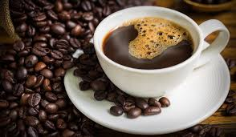

Coffe Latte
Marc 23, 2020Views : 5,487
Latte atau Caffè latte (Bahasa Italia yang artinya kopi susu) adalah espresso atau kopi yang dicampur dengan susu dan memiliki lapisan busa yang tipis di bagian atasnya.
Perbandingan antara susu dengan kopi pada caffè latte adalah 2:1.
Di AS kombinasi latte terdiri dari sepertiga espresso dan dua pertiga susu panas, sehingga lebih terasa susunya dibanding cappuccino.
Watch This

AMERICAN COFFEE
Marc 23, 2020Views : 5,487
Americano tentu adalah kopi hitam yang berasal dari Amerika.
Meskipun di coffee shop di Amerika dan sekitarnya tentu menyediakan juga menu long black.
Meski sama-sama kopi hitam, Americano tentu berbeda dengan long black.
Yang membedakannya sebenarnya sederhana saja yaitu cara penyajiannya.
Cara menyajikan adalah espresso disiapkan terlebih dahulu lalu menambahkan air panas setelahnya.
Hasil Americano biasanya nyaris tak meninggalkan krema di permukaan cangkir.
Hal tersebut dikarenakan espresso yang diguyur air panas sehingga memecah krema yang ada pada espresso.
Hal inilah perbedaan paling jelas antara Americano dan long black.
Krema pada permukaan cangkir adalah yang membedakan kedua jenis kopi hitam ini.
Watch This

GREEN COFFEE
Marc 23, 2020Views : 5,487
Green Coffee atau Kopi Hijau adalah Biji kopi yang belum melalui proses pemanggangan atau belum diolah.
Biji kopi hijau memiliki kadar asam klorogenat yang lebih tinggi sehingga banyak yang menganggap bahwa hal tersebut dapat mempengaruhi metabolisme dan kadar gula darah yang dapat membantu program diet
Watch This